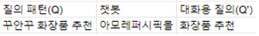

아모레-카카오i

#카카오i #AI챗봇 #아모레
기여도 기획 100%, 제작기간 약 1주 21. 12보도자료 및 특허안에 따른 아모레-카카오i UX디자인
소비자가 챗봇 메신저를 통해서 보다 간편하게 최신의 화장품 정보를 안내받고 쇼핑할 수 있는 아모레퍼시픽-카카오i 서비스를 기획했습니다.
기획하면서 카카오i 관련하여 보도자료, 특허 자료 및 현재 출시 된 카카오i 서비스를 참조했습니다. 소비자는 카카오i 챗봇 메신저를 이용하여
간편하게 쇼핑몰, 보험, 은행, 음식 배달 등의 서비스를 이용할 수 있습니다. 챗봇은 소비자의 질문에 최신성, 양질의 정보를 제공합니다.
챗봇 메신저는 소비자의 검색어에 대한 응답 결과를 도출할 수 있고 대화형 UI를 통해 응답이 표시됩니다.
이에 따라 ai 챗봇의 주요 기능을 이용하여 각각의 4가지 가상 시나리오를 나타냈습니다.
1. 엔티티 및 발화패턴을 통한 주문>결제>주문조회
2. 퀵리플라이에 의한 ‘이전상품보기’, ‘지금상품보기’
3. 제네릭 메뉴를 통한 고객상담
4. 웹에서 상품검색 및 챗봇 호환 기능
참조 자료
대화형 서비스를 제공하는 서버 및 방법(SERVER AND METHOD FOR PROVIDING DIALOGUE SERVICE)
출처: 키프리스
"꾸안꾸 화장품 추천해줘" 카카오-아모레 AI 챗봇 서비스
출처: https://n.news.naver.com/article/008/0004656363
첫 번째 표에서는 챗봇으로 질의 응답하기 위한 발화패턴이다. 사용자의 ‘꾸안꾸 화장품 추천해줘’라는 기등록된 질의 패턴은 챗봇에 매칭되어있고 매칭된 챗봇에 의해 응답이 도출될 수 있다.
두 번째 표에서는 자주 사용하는 엔티티이다. 시스템에 기등록된 ‘@sys,makeup’ 엔티티이다. 표에서 설명과 같이 화장품에 관련된 엔티티를 따르며 예시로는 화장품, 메이크업, 베이스 등 이 있고 발화예시로는 ‘꾸안꾸 화장품 추천해줘.’를 들 수 있다.
첫 번째 도면에서는 ‘꾸안꾸 화장품 추천해줘’ > 베스트 상품을 추천한다는 설명메세지와 함께 상품을 추천합니다. 상품의 성분 및 리뷰를 볼 수 있는 ‘자세히 보기’ 버튼과 바로 구매 가능한 ‘바로 주문’버튼이 있습니다.
첫 번째 도면에서 바로주문 버튼 클릭> 두 번째 도면, 결제페이지 이동 ‘바로주문’버튼을 눌어 결제페이지로 이동하여 사용자의 주소, 결제 상품 정보확인이 가능하며 결제를 진행할 수 있습니다.
두 번째 도면, 결제페이지에서 주문 > 세 번째 도면에서는 챗봇에서 주문완료 응답확인 결제를 마친 후 챗봇에서는 주문완료 응답을 확인할 수 있고 '주문/배송 확인하기'를 통해 자세한 주문/배송관련 정보를 확인할 수 있습니다.
사용자는 ‘이전상품 바로보기’ 또는 ‘지금상품 바로보기’ 퀵리플라이를 통해서 별도의 타이핑없이 신속하게 이전상품 및 지금상품에 대한 리스트를 확인할 수 있으며 대화를 이어나갈 수 있다. 첫 번째 도면에서 사용자는 '이전상품 바로보기'를 눌러 두 번째 도면의 응답을 확인할 수 있다.
사용자가 제네릭메뉴 버튼을 통해서 ‘고객센터 안내’, ‘할인쿠폰 발급’ 등 주요 서비스들을 쉽게 이용할 수 있도록 합니다. 두 번째 도면에서와같이 사용자가 제네릭버튼 안의 ‘고객센터 안내’를 누르면 고객센터 안내에 대한 응답을 안내받을 수 있다.
웹에서 사용자의 검색어에 따른 결과가 챗봇화면으로 나타난다. 사용자 단말에서 대화형 UI를 통해 표시된 응답 및 검색 결과를 도시한 예시적인 도면이다. 도면을 참조하면, 사용자로부터 검색창을 통해 ‘아모레퍼시픽 슈퍼콜라겐’이라는 검색어를 입력받고, ‘아모레퍼시픽 슈퍼콜라겐’과 관련된 응답을 검색 서비스 페이지 내의 대화형 UI를 통해 표시할 수 있다. 또한 ‘아모레퍼시픽 슈퍼콜라겐’이라는 웹기반의 검색결과를 검색 서비스페이지를 통해 표시할 수 있다.
두 번째 도면은 첫 번째 도면에서 사용자 단말의 ‘챗봇 바로가기’를 선택해 챗봇으로 이동하는 챗봇 링크를 표시할 수도 있다. 검색페이지 내의 대화형UI를 통해 액션을 완결할 수 없는 동작의 경우에 사용자가 액션을 완결할 수 있도록 현재 응답을 도출한 챗봇이 앱서비스로 이동할 수 있도록 챗봇 링크를 표시한다.
세 번째 도면은 추가적으로 질문입력창에 ‘파운데이션’ 질문을 입력받은 경우에 ‘파운데이션’과 관련된 ‘네오 파운데이션 매트’, ‘더블래스팅 세럼 파운데이션’, ’블랙 파운데이션 SPF15.PA+’, ‘퍼펙트 커버 파운데이션’, ‘울 스테이 파운데이션 글로우’ 등과 같이 ‘파운데이션’과 관련된 자동 완성 기능을 제공할 수 있다.
네 번째 도면에서는 질문입력창에 ‘파운데이션’이라는 입력키워드의 자동완성 데이터 중 ‘퍼펙트 커버 파운데이션’을 선택해 응답을 도출한 결과이다.
아이피휴먼
#2021특허청R&D우수과제선정 #AI이미지검색 #IP출원신청
기여도 기획 및 UX디자인 100%, 제작기간 21. 07 - 21. 122021년 7월부터 12월 약 6개월간 IP일반검색과 상표 AI이미지검색을 포함하여 IP출원신청 서비스를 프로젝트매니저로서 기획과 디자인을 담당했습니다. 내년 초에 서비스가 정식적으로 출시될 예정으로 지난 11월 특허청 R&D에서 우수과제로 선정되었습니다.
일반인 사용자가 접근하기 어려운 IP출원신청과 IP검색 부분을 셀프출원신청 및 IP검색, 일반검색 및 AI이미지검색을 통해서 접근성을 높이고 사용자에게는 간편한 출원프로세스를 제공하고 기업측에서는 웹에서 서비스를 제공함에 따라 이전의 방식에서보다 인력 및 시간의 비용 절감을 목표로 서비스를 기획하였다. IP출원 신청 및 IP검색을 메인 서비스 ip출원신청, 검색, 견적 및 관리자페이지로 구성되어있습니다. IP관련 검색은 일반적으로 전문적인 지식을 갖지 않은 사용자가 다루기 어려운 점이 있다. 상표, 특허, 디자인 검색 중 가장 니즈가 많은 상표검색에서 인공지능 이미지검색을 통해 일반 사용자도 쉽게 검색할 수 있도록 하고자 했다. 타겟층을 상표 검색을 필요로 하는 일반인으로 정함으로써 ‘어떻게 해야 직관적이고 항목들이 정돈되어 보여질 수 있는지’에 대해 고민했습니다. 이미지검색결과 UI화면, 이미지분류 및 추천에 의한 인터페이스를 사용자가 직관적으로 이해하기 쉽도록 기획 및 UX디자인하는 것에 중점을 두었습니다. 상표 AI이미지검색결과 UI화면에서 검색된 이미지에 영역 박스를 지정하고 분류되는 대분류/중분류에 따른 라벨을 부여하여 상품의 분류를 쉽게 알 수 있도록 의도했다. 또한 이미지검색 우측에 추천태그를 위치해 상품분류, 유사군코드, 도형코드를 나타냄으로써 사용자가 상표에 대한 정보를 더 쉽게 인지할 수 있도록 했습니다.
IP출원신청 부분에서는 셀프신청 방식과 변리사의 전문적으로 등록 가능성을 검토하는 두 가지 방식의 신청 분야로 나뉘었는데 특히, 셀프출원신청에서는 필요한 위임장 및 전자도장(서명) 디자인을 추가하여 셀프출원 프로세스를 간편하게 해 사용자에게는 편리함을 사업적인 측면에선 비용 절감을 의도했다. 첫 번째 도면은 법인 사용자가 전자 도장을 제출하기위해 파일을 첨부하거나 전자 도장을 만들 수 있는 UI이다. 두 번째 도면은 개인사용자 전용 서명란 이며 전자도장 만들기 및 파일 첨부도 가능하다. 또한 사용자가 비용을 미리 알고 셀프출원신청을 할 수 있도록 셀프견적UI를 기획했다. 사용자가 각각 상표, 특허, 디자인에 대한 국내/해외에 관련한 항목을 선택하면 대략적인 비용을 알 수 있도록 했습니다.
Pre-Cas AI범죄예측•분석 시스템
#경찰청범죄예측•분석 #프리카스 #그래프 #군집화
기여도 UX디자인 100%, 제작기간 20. 09 – 20. 102020년 10월부터 11월까지 두 달간 경찰청 프리카스(Pre-CAS·Predictive Crime Risk Analysis System)' 범죄분석 및 예측 시스템개발에 UX디자이너로 참여했습니다. 학부 시절 경영정보학과 교수님께서 결성하신 프리랜서팀에서 진행한 프로젝트로 약 10여명이 참여했고 개발자 9명 UX디자이너 1명으로 진행됐습니다. 올해 5월부터 실사용되고 있으며 주로 파출소에서 범죄예측 및 분석을 위해 사용되고 있습니다.
주로 파출소에서 사용할 목적으로 지역 특성에 맞춘 치안 정책을 중요 과제로 꼽혀 빅데이터를 기반으로 한 범죄예측 및 분석 시스템의 중요성이 커짐에 따라 기획됐다. 범죄 발생 가능성을 예측하고 선제적으로 대응할 수 있도록 시스템에서는 방범치안 분석, 치안관리, 범죄위험도 예측, 탄력순찰, 112신고내역, 범죄예방진단 등의 기능을 사용할 수 있다. 빅데이터를 기반으로 한 범죄예측 및 분석 시스템이며 로그인-메인페이지-컨텐츠(지도)화면으로 복잡하지 않게 구성했다. 사용자가 범죄율을 한눈에 쉽게 알아볼 수 있도록 수집된 데이터를 표와 그래프, 아이콘의 군집화를 통해서 나타냈다.
보도자료 : http://www.gvalley.co.kr/news/articleView.html?idxno=576670홈IoT도어록모바일
#홈IoT #반응형웹UIUX #프론트엔드
기여도 UX디자인 및 반응형웹 UI개발 100%, 제작기간 20. 11 – 20. 122020년 7월부터 12월까지 약 6개월간 KOSTA에서 iot개발자 양성과정 수업을 이수했습니다. 하드웨어부터 웹으 로 연결하는 소프트웨어에 대한 이해도를 높이고 직접 구현할 수 있게 됐습니다. 20.11월부터 약6주간 4명의 팀원들과 팀을 이루어서 홈iot도어록연동 반응형 웹 서비스를 기획했습니다. 서버에 도어록(IoT)을 도어록(IoT)에 웹을 연동시켜 사용자가 문을 여닫고, 방문자 확인, 집 안 기기 전원on/off 가능한 서비스를 기획했고 도어록과 연동한 반응형 웹 기획, UIUX디자인 및 도어록을 연동할 수 있는 반응형 웹UI개발을 했습니다.
카카오미니 불 좀 켜줘! 4차산업 사물인터넷(IoT)은 일상에 많은 변화를 만들어내고 있다. 사물인터넷(IoT), 인공지능(AI) 등 4차산업혁명 주요 기술을 활용해 주거 공간을 보다 안전하게, 보다 편리하게 조성되고 있다. 글로벌 시장조사기관 마켓앤마켓은 세계 스마트홈시장 규모가 2015년 기준 460억 달러에서 2022년 1217억 달러로 3배 팽창할 것이란 전망도 내놓았다. 이에 따라 이번 프로젝트에서는 사물인터넷(IoT)과 모바일기기를 활용해 사용자가 모바일웹(Mobile Web)을 통해서 도어록(doorlock)을 원격으로 제어하고 집 내 기기를 설정하여 외출이나 귀가 시 조명·난방·가스·방범 등 집 내 기기를 원격으로 제어해 에너지 소비를 줄이고 보안 강화, 생활의 편리함을 도모한다. 서비스를 통해 사용자에게 편리한 맞춤형 환경을 제안하고 원격으로 실행할 수 있는 것이 특징이다. 만일 가스를 끄지 않고 외출했을 때 기존 IoT 시스템의 경우 외부에서 스마트폰 등을 활용해 인덕션 전원을 차단할 수 있다.
타켓
- 비교적 안전에 취약한 혼자 사는 20대 여성
- 외출 시에 가스, TV 등의 전원을 켜두고 외출하는 등 건망증세를 보이는 40 50대
- 집의 비밀번호를 직접적으로 알려주기 어려운 손님이 오시는 주거인
- 동거인의 출입을 보다 쉽게 알고 싶은 주거인
- 집 안에서 현관 문 앞까지 가지 않고 문을 여닫고 싶은 주거인
구현 기능 목표
HW
1단계 카메라인식 RFID otp 스마트홈제어
2단계 임시비밀번호 얼굴인식 및 음성인식
3단계 도어록 집 안 내부에서 제어
WEB
1단계 디자인 스마트홈 원격제어 도어록 제어 출입자 기록
2단계 임시비밀번호 서비스 소개 웹페이지 반응형웹
3단계 음성인식 예약기능
꽃배달app 제니(JENNY)
#앱디자인 #UIUX #사용자리서치
기여도 기획 및 UX디자인 100%, 제작기간 20. 07 – 20. 112020년 코로나로 인한 배달서비스 증가로 졸업전시를 위해 기획한 꽃배달앱으로 기획 및 디자인을 했습니다. UX디자인에 대한 프로세스, 사용자 리서치, 기획부터 디자인까지 모든 단계를 직접 UX적 관점에서 기획하고 디자인해봄으로써 UX디자인 프로세스의 기본을 익히고 서비스를 이용할 사용자 타겟팅에 대한 이해도를 높이는 계기가 되었습니다.